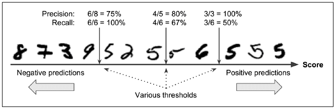
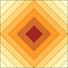
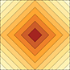
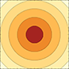
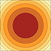
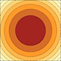
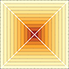
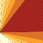
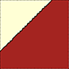

3. Performance Metrics¶
机器学习中有许多度量可以用于评价模型的好坏, 使用某些度量也可以对模型进行优化
3.1. Confusion Matrix¶
通常用于 classification
| Ground Truth | |||
| actual positive | actual negative | ||
| Predicted | Predicted positive | True Positive, Power |
False Positive, Type I error |
| Predicted negative | False Negative, Type II error |
True Negative | |
Rates from confusion matrix |
Description |
euqation |
|---|---|---|
PRECISION or positive predictive value (PPV) |
预测为 positive 的结果中正确的比例 |
\[PPV = \frac{TP}{TP + FP}\]
|
negative predictive value (NPV) |
预测为 negative 的结果中正确的比例 |
\[NPV = \frac{TN}{TN + FN}\]
|
false discovery rate (FDR) |
预测为 positive 的结果中错误的比例 |
\[FDR = \frac{FP}{FP + TP} = 1 - PPV\]
|
false omission rate (FOR) |
预测为 negative 的结果中错误的比例 |
\[FOR = \frac{FN}{FN + TN} = 1 - NPV\]
|
sensitivity, RECALL, hit rate, or true positive rate (TPR) |
positive 实例中正确检测出的比例 |
\[TPR = \frac{TP}{P} = \frac{TP}{TP + FN}\]
|
SPECIFICITY or true negative rate (TNR) |
negative 实例中正确检测出的比例 |
\[TNR = \frac{TN}{N} = \frac{TN}{TN + FP}\]
|
miss rate or false negative rate (FNR) |
将 positive 错认为 negative 的比例 |
\[FNR = \frac{FN}{P} = \frac{FN}{FN + TP} = 1 - TPR\]
|
fall-out or false positive rate (FPR) |
将 negative 错认为 positive 的比例 |
\[FPR = \frac{FP}{N} = \frac{FP}{FP + TN} = 1 - TNR\]
|
accuracy (ACC) |
预测正确的比例 |
\[ACC = \frac{TP + TN}{P + N} = \frac{TP + TN}{TP + TN + FP + FN}\]
|
F1 score |
the harmonic mean of precision and recall |
\[F_1 = 2 \cdot \frac{PPV \cdot TPR}{PPV + TPR} = \frac{2TP}{2TP + FP + FN}\]
|
Matthews correlation coefficient (MCC) |
\[MCC = \frac{TP \times TN - FP \times FN}{\sqrt{(TP + FP)(TP + FN)(TN + FP)(TN + FN)}}\]
|
|
Informedness or Bookmaker Informedness (BM) |
\[BM = TPR + TNR - 1\]
|
|
Markedness (MK) |
\[MK = PPV + NPV - 1\]
|
|
Prevalence |
positive 在总体中的比例 |
\[\frac{P}{P + N} = \frac{TP + FN}{TP + FN + FP + TN}\]
|
Accuracy 通常并不适合用作 classifiers 的评价指标, 特别是当数据分布十分倾斜的时候 (skewed dataset)
例
在 1 0000 人的样本中, 使用算法检测患病率 1% 的疾病, 结果:
TN - 9800
TP - 12
FN - 100
FP - 88
可以得到 \(ACC = (9800 + 12) / 10000 = 0.9812\)
然而 \(TPR = 12 / 100 = 0.12\)
使用 sklearn.metrics 可以计算上述指标
from sklearn.metrics import ( precision_score, recall_score, f1_score, # ... )
没有哪个度量是绝对的, 具体情况具体对待
3.1.1. Precision / Recall Tradeoff¶
Precision 和 Recall 是 classification 中常用的两个度量, 然而无法同时提升 (或降低) 二者, 这被称作 Precision / Recall Tradeoff
比如使用 Stochastic Gradient Descent (SGD) 的线性 classifier, SGCClassifier:
算法基于一个决策函数 (decision function) 对每个实例计算一个分数, 若分数高于特定的阈值, 则将实例划为 positive, 反之划为 negative
上图判断一个数字是否为 “5”, 按分数从低到高从左向右排列;
可以看到, 通过调整阈值, Precision 和 Recall 会随之朝着各自相反的方向改变
Precision-Recall Curve 如何决定阈值¶
通过同时画出 Precision 和 Recall 相对于阈值的曲线, 可以直观地看出并选择合适的阈值
使用 scikit-learn 设置阈值
scikit-learn 中的 classifiers 无法直接设置阈值, 但可以通过获取决策分数来自由设置阈值
y_scores = sgd_clf.decision_function(data) threshold = 0 y_pred = (y_scores > threshold)
使用 scikit-learn 绘制曲线
获取所有数据实例的分数
from sklearn.model_selection import cross_val_predict y_scores = cross_val_predict(model, X_train, y_train, cv=3, method='decision_function')
对所有可能的阈值, 计算 Precision 和 Recall
from sklearn.metrics import precision_recall_curve precisions, recalls, thresholds = precision_recall_curve(y_train, y_scores)
绘图
def plot_precision_recall_vs_threshold(precisions, recalls, thresholds): plt.plot(thresholds, precisions[:-1], 'b--', label='Precision') plt.plot(thresholds, recalls[:-1], 'g-', label='Recall') plt.xlabel('Threshold') plt.legend(loc='upper left') plt.ylim([0, 1])
或者可以直接以 Precision / Recall 分别为纵坐标 / 横坐标:
{kind=link}
{kind=link}
3.1.2. ROC Curve¶
Receiver Operating Characteristic (ROC) 曲线也是二元 classifiers 的常用工具, 是 true positive rate (recall) 相对于 false positive rate 的曲线
from sklearn.metrics import roc_curve
fpr, tpr, thresholds = roc_curve(y_train, y_scores)
def plot_roc_curve(fpr, tpr, label=None):
plt.plot(fpr, tpr, linewidth=2, label=label)
plt.plot([0,1], [0,1], 'k--')
plt.axis([0, 1, 0, 1])
plt.xlabel('False Positive Rate')
plt.ylabel('True Positive Rate')
{kind=link}
虚线代表完全随机的算法; 好的算法应当朝着左上角尽量远离虚线
比较算法好坏的方法之一是 AUC (Area Under the Curve):
完美算法的 ROC AUC 为 1
完全随机的算法的 ROC AUC 为 0.5
from sklearn.metrics import roc_auc_score
roc_auc_score(y_train, y_scores)
3.2. Distance Metrics¶
距离度量是一个函数 \(d(x,y)\), 用于定义两个元素 (数字, 向量, 矩阵等) 之间的距离; 通常被用作优化问题 (optimization problem) 的损失函数 (error/cost function), 函数的优化即是损失函数的最小化
如果距离是 0, 则表示两个元素在特定度量下完全相等
使用 sklearn.metrics 可以计算:
from sklearn.metrics import (
mean_absolute_error, mean_squared_error, r2_score,
# ...
)
3.2.1. Minkowski Distance¶
明氏距离又叫做明可夫斯基距离, 是赋范向量空间中的一种测度, 被看做是欧氏距离和曼哈顿距离的一种推广 (generalized \(L_p\)-norm)
\(L_0\) norm distance¶
\(L_0\) 范数计算向量中的非 0 元素个数 \(L_0\) 范数距离计算两个向量中不同元素的个数
> (1, 1) 和 (2, 2) 之间的 $L_0$ distance 是 2
\(L_1\) norm distance¶
\(L_1\) norm 又称 Manhattan- 或 Taxicab-norm
\(L_1\) norm distance 又称 Manhattan Distance 或 Sum of Absoulte Difference (SAD)
曼哈顿距离在二维平面上表现为两点在南北方向上的距离加上在东西方向上的距离
Mean-Absolute Error (MAE)¶
平均绝对误差, SAD 的归一化版本 (normalized version)
Canberra Distance¶
曼哈顿距离的加权 (weighted) 版本
It is often used for data scattered around an origin, as it is biased for measures around the origin and very sensitive for values close to zero.
\(L_2\) norm distance¶
又称 Euclidean Distance, 代表了欧氏空间中两点间的距离
Sum of Squared Difference (SSD)¶
\(L_2\) norm distance 的平方; 对值很大的离群值很敏感
Mean-Squared Error (MSE)¶
均方误差 (残差平方和), SSD 的归一化版本 (normalized version)
当误差位数过高时, 可通过加上根号使得误差与数据处于同一级别
均方根误差 Root Mean Square Error (RMSE)
\[RMSE = \sqrt{MSE}\]
\(L_\infty\) norm distance¶
又称 Chebyshev Distance 或 chessboard distance
切比雪夫距离, 兩个点之间的距离定义为其各座标数值差的最大值
3.2.2. Cosine Distance¶
通过测量两个向量的夹角的余弦值来度量它们之间的相似性 (被1減即爲距離)
3.2.3. Pearson’s Distance¶
Pearson distance 是基于 Pearson’s product-momentum correlation coefficient 的 correlation distance
相关系数取值范围为 \([-1, 1]\), 因此 Pearson distance 取值范围为 \([0, 2]\), 表示了两个向量之间的线性关系
3.2.4. Hamming Distance¶
两个等长字符串对应位置的不同字符的个数; 即将一个字符串变换成另外一个字符串所需要替换的字符个数
例
1011101与1001001之间的汉明距离是 2
2143896与2233796之间的汉明距离是 3
“toned”与”roses”之间的汉明距离是 3
3.2.5. R Squared (\(R^2\))¶
决定系数 \(R^2\) 表示由回归模型中的一个或多个自变量所解释的方差占因变量总方差的比例; 相关性说明了自变量和因变量之间关系的强度, 而 \(R^2\) 说明了一个变量的方差在多大程度上解释了第二个变量的方差
其值一般在 0 ~ 1 之間: - 0 表示預測無法解釋任何誤差 - 1 表示預測可以解釋所有的誤差
其中:
\(SS_{tot}\) 為所有數據與平均數之間的誤差的平方和
\(SS_{reg}\) 為預測的數據與原數據平均數之間的誤差的平方和 (即由預測所解釋的誤差 Explained variation)
\(SS_{res}\) 為預測的數據與原數據之間的誤差的平方和
\(SS_{tot} = SS_{reg} + SS_{res}\)
3.2.6. Entropy¶
TODO cross entropy